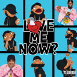

Artists I'm Listening To
I'm currently listening to the following artists and find them interesting, in no particular order:
- Br3nya – I don't know much about her but she seems like she's going to be a great and fun feel good artist someday. She's also nice to look at.
- Tory Lanes – He's apparently been around for some time, but managed to stay out of my rotation. I am not sure if he's released an album of his own before this year, but the discography indicates that he has been featured by other artists.
- Dave East & Styles P. – Where the future of Hip Hop meets it's history. Dave East, in my opinion one of New York's current great artists has teamed with one of my favorite artist from the rap trio The LOX to put out what could be one of my top five for 2018.
My music tastes are eclectic, the artist above and the songs on the Songs I'm Listening To page only represent the songs that were at the top of the music library on my phone on November 23, 2018. It has likely changed since then.